| The TETR.IO Community Rules were last updated on January 22nd, 2022. |
|
These rules are the basis of the TETR.IO community and endeavor to keep it a fun and welcoming place for everyone. Please understand the faith in which these rules are written and do not try to look for loopholes ー staff holds the final say. 1. DO NOT (ATTEMPT TO) BREAK THE TETR.IO TERMS OF SERVICE.The TETR.IO Terms of Service and this document are interconnected. Breaking the Terms of Service will result in immediate bans from all connected properties, and similarly, breaking the Community Rules is a breach of the Terms of Service. Please specifically note the fact you must be 13 years of age or up to play TETR.IO. If you claim to be under 13 (even as a joke), we must endeavour to delete all of your data immediately.
2. DO NOT (ATTEMPT TO) CHEAT IN ANY WAY.Using any third-party utilities, loopholes or exploits of any kind to get any sort of advantage is not OK. This includes but is not limited to things like macro programs, timescale programs, bots, replay forgery, lagswitches, assistance tools (like solution finders) and so on. This includes tournament rules for partnered tournaments. When playing in a tournament, follow the established rules of the tournament, given they do not break Community Rules or Terms of Service. Keep tournaments fair.
3. KEEP TO EXACTLY ONE ACCOUNT PER PERSON.TETR.IO has a strict one-account-per-user policy. Per person, there may only exist one registered account (with very few exceptions). Similarly, it is strictly forbidden for one registered account to be used by more than one person. For more information, see the alt policy below.
4. DO NOT (ATTEMPT TO) EVADE A BAN OF ANY KIND IN ANY WAY.If you have been silenced, restricted or otherwise banned, you may never switch to another account to evade the ban. If you do not agree with the ban or its duration, you may appeal it. Evading a ban makes it permanent. Some exceptions exist. For example, if you had created an alternate account, this account would be banned, but you would still be allowed to log into your original account. Similarly, if your IP was banned by actions of someone else on the network, it would be OK to log into your account (which would sometimes bypass the ban), or play in a different location which is not banned.
Using an anonymous account to evade an account ban is similarly forbidden.
5. DO NOT (ATTEMPT TO) HARM/HARASS OTHERS IN ANY WAY.This includes, but is not limited to, doxxing, inciting violence, impersonation, (sexual) harassment, discriminating content, or derogatory words and phrases. Purposefully using a username much like someone else's is seen as impersonation.
6. Be civil and respectful.Harassment, antagonism, discrimination and the such have no place in the TETR.IO community. Talk to people as if you're talking to them in real life. Banter is fun, but only if everyone is OK with it. If you're uncertain whether you're breaking this rule, you probably are. 7. Keep chats clean and safe.Do not spam in public chats, public spaces or the social systems. Spam/flooding is generally annoying to just about everyone except for the sender(s), and decreases the quality of chat considerably. Similarly, please do not advertise your content unless it specifically fits the topic. This especially applies for third-party chat servers (like Discord, TeamSpeak, or Skype servers/groups), social media like Twitch or YouTube, and referral links.
8. TETR.IO is an all-ages community.18+ ("NSFW") content such as drug use, topics of a sexual nature, shock content, content meant to offend, etc. are not allowed in public chats and other public spaces. If you're uncertain whether you're breaking this rule, you probably are. Similarly, keep avatars, banners, "about me" sections, etc. safe for work. Any offensive content found will be removed and earn you a restriction.
9. Let TETR.IO staff handle issues."Backseat moderation" often only impedes the work of the staff team. Report players with the in-game buttons and move on, please. Furthermore, when someone gets silenced or restricted, please leave the situation be. Their case involves only them and the staff team. Similarly, encourage fair play. Do not give attention or encouragement to cheaters or toxic players, as that may encourage them to continue. Report and move on.
10. Report bad actors.To help our work, if you see anything out of the ordinary, please report bad actors using the in-game reporting tool. You can find this tool on the user's profile (under the triangle button). Please do not abuse the reporting tool, and keep it to properly considered reports only. Submitting false, misclassified or spammy/nonsense reports may result in a ban.
|
ALT POLICY

A. Keep to one account per person.Your account represents yourself (and only yourself), so treasure it.

B. It's OK to share devices, as long as you use your own accounts.For example, it's no problem to use a shared device, or a family computer to play. Make sure you never play on eachothers' accounts, though. C. Do not make multiple accounts for yourself.This greatly harms fair play, especially when you enter leaderboards, rank-limited rooms and tournaments with these.

D. Do not share your account with others.Your account is yours only. If you believe your account may have been compromised, contact staff. E. Anonymous accounts are exempt.You may use anonymous accounts at wish, within reason, as long as you handle them with care (see the next section).

F. Do not evade any bans or limitations using anonymous accounts.Do not evade any bans, limitations or rules, be it in-game or otherwise. Do not enter "noob rooms" or rank-capped rooms/tournaments with these.

G. Deleted accounts are not exempt.Deleting, then recreating accounts (without proper reason) is deemed using an alt, as it has similar impact on other users and leaderboards. When staff detects you are breaking the alt policy, all your accounts may be restricted. Some exceptions are available upon request. Message staff if you believe you have a proper reason for an alt, and wish to seek approval. Like all TETR.IO Community Rules, this policy operates on the basis of intent. Many cases are handled on a case-by-case basis. |
WHAT IF I BREAK THE RULES?If you find yourself on the wrong side of our rules, bad things will happen, including but not limited to: The removal of infringing content from your profile and (global) leaderboards
A silence ー the removal of your ability to chat in-game or create public rooms for a period of time (or forever)
A restriction ー the removal of your ability to play online or submit scores entirely for a period of time (or forever)
A block ー the removal of access to your account for a period of time (or forever)
The blocking of your IP ー disallows creation of new accounts (or sometimes all use) for a period of time (or forever), often used when it is suspected that the IP belongs to a larger group of people (e.g. a school)
Severe offenses that go well beyond the scope of our rules may see your entire account terminated immediately. |